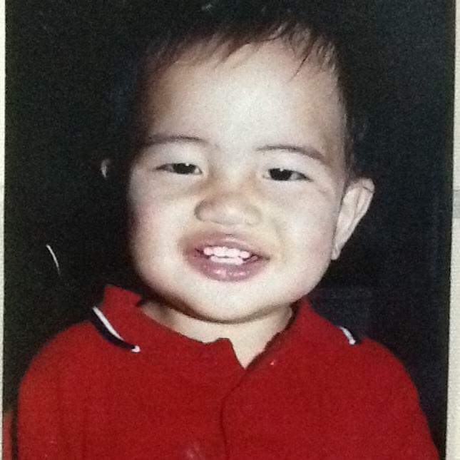
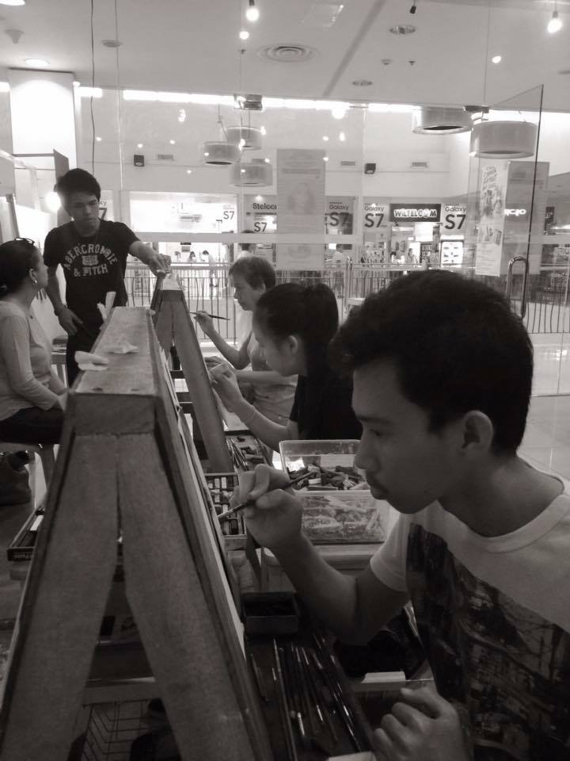
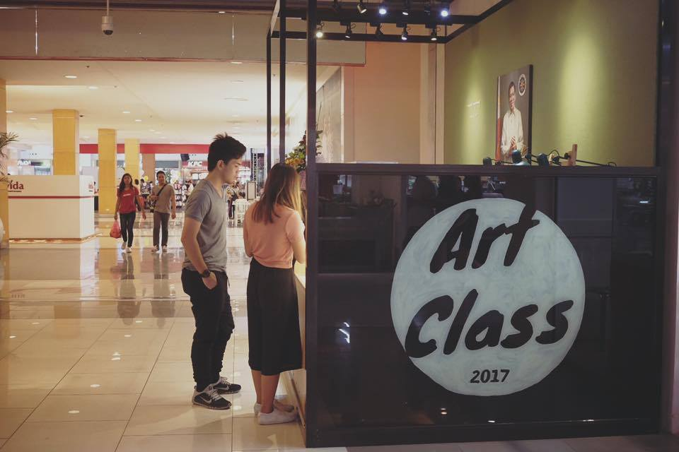

M A T T H E W D. M A N A L O
|  |
The KidI grew up in Davao City, Philippines. Ever since I was a toddler, I've always had an appreciation for the arts and crafts. It was as if by instinct that I, the toddler, picked up a pencil one day along with a piece of paper and started drawing.
|
The ApprenticeI was in my third year in junior high school when in a local mall, an art class opened up for enrollment. Since I had nothing to do for the summer break, I said "why not?." It was at that time my passion rekindled. Ironically, I was last to finish my portrait and was one of the messiest I would say but such trivial things could not stop the love for what I was doing. Eventually I improved, and the business owner as well as the head teacher for the art class saw this and took me in as his apprentice as per request. My mentor was none other that Mr. Mart Henry Bongabong or commonly known as "Macky Bongabong." At such a young age I was exposed to professionalism in the business industry; I lived and breathed as a professional artist. I eventually became one of the four artists that would be teaching and doing commissioned works. |
 |
|  |
Matthew Manalo Fine ArtAfter working under the name of my mentor for two years, I had already been equipped with the fundamentals of business in the art industry. At age 18, I put up a name in the industry - Matthew Manalo Fine Art. It's a commission based business offering photorealistic to hyperrealistic charcoal paintings where the slogan is "Exhibiting the Finest" |
The Artist
I became my own ideal artist to when I was a kid. Now, standards raised, I am eager to learn and fiercer than ever. My specialty is photorealism and hyperrealism. I see my art as a form of appreciation; whenever I paint something, I express the beauty that can be found in the subject. To me, making art is a form of meditation, it's a state of mind wherein I am at my peak performance and become my true self. That is to say, every artwork I make is made with a lot of investment in time, attention and effort much like a form of courtship. Needless to say, I value each painting I make; I have never thrown out a portrait starting from when I made my first messy painting. Sometimes making art is full of turmoil nevertheless, it's always exciting.